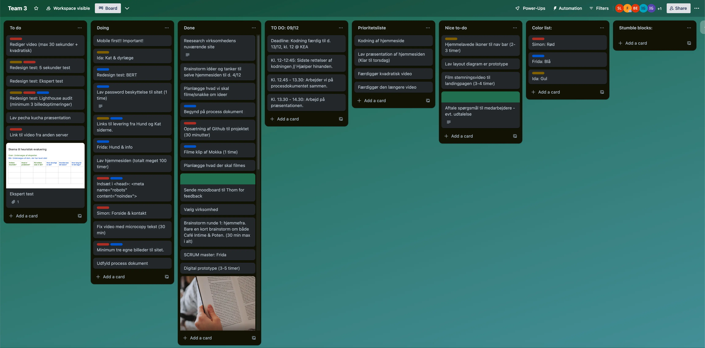

INDHOLD
Tema 5
I tema 5 fokuserede vi primært på at lære om Premier Pro, billedredigering og styrkelse af samarbejdsevner. En stor del af forløbet omhandlede effektiv kommunikation på tværs, hvor vi eksempelvis blev introduceret til SCRUM-metoden, Team Canvas og hjemmesiden Trello for at optimere vores gruppesamarbejde.
Stærkere gruppearbejde
Team Canvas
At arbejde i et kreativt team kræver struktureret samarbejde og klare retningslinjer. Der skabte Team Canvas en dybere forståelse for teamets dynamik, mål og individuelle styrker. Ved at fastlægge roller, ansvar og fælles mål hjalp Team Canvas os med at skabe et sammenhængende og effektivt team, der arbejder mod fælles succes.
Trello
Da det var på plads, brugte vi hjemmesiden Trello for at organisere vores arbejdsopgaver, hvor vi skulle skrive hvor længe opgaven cirka ville tage. Det gjorde nemt ens gruppe at overskue arbejdsopgaverne, som man så kunne færdiggøre uden at skulle planlægge med resten af gruppen. Vi opdelte dem i primært tre sektioner: To-do, Doing og Done.
En central del af vores gruppearbejde blev indførelsen af Trello som vores nye værktøj. Vi brugte Trellos funktioner som labels og farvekoder, så vi let kunne identificere og fokusere på de vigtigste opgaver. Dette hjalp os med at holde en klar retning og effektivt prioritere vores arbejde.
VIDEOSITE
Til videosite opgaven tog jeg og en holdkammerat ud for at producere en kort video, der skulle omhandle passion.Vi tøvede ikke, da vi fik muligheden for at filme ude hos vinyltrykkeriet RPM Records. Her skulle vi interviewe medejeren, som fortalte om hvordan han gik fra roadie til entreprenør. Jeg brugte meget tid på at strikke historien sammen fra de klip, jeg havde. Jeg var bekymret om, hvor meget jeg måtte blande mig i hans interview, og lod ham derfor tale mere frit. Stemningen på fabrikken er en stor del af deres identitet, så vi prioriterede at optage en masse B-rolls.
Lyd & Musik
Med en baggrund i musik og lydproduktion, valgte jeg at komponere et lille stykke instrumentalt musik til at give lidt til produktionsværdien. Desværre på grund af tidspres, havde jeg ikke mulighed for at finmixe det, så det kan godt mudre lidt sammen med voice-overen. For at fixe det, skulle jeg bare have skruet lidt ned for musikken, og udskåret nogle frekvensområder i musikken, der ville give endnu mere plads til hans stemme.
Til stemmen brugte jeg en equalizer til at fjerne mudrende frekvenser og en kompressor til at banke de største udsving i volumen ned, samtidigt med at øge de svagere steder, for at få et balanceret take.
VIRKSOMHEDSSITE
Som temaets afsluttende projekt fik vi til opgave at redesigne en virksomheds hjemmeside. Her fandt min gruppe og jeg dyrebutikken Poten. I opgaven fik vi brugt alt hvad vi havde lavet i løbet af semesteret, fra designteori, moodboards, prototyper og layout diagrammer til interviewteknik, video- og billedredigering. Vi brugte både eksperttest til først at vurdere, hvorvidt deres hjemmeside var brugervenlig.
Set i Bakspejlet
Desværre, men måske heldigvis, oplevede vi hvor skrøbeligt et gruppearbejde kan være, da vi alle skulle lære at navigere os bedre i en gruppesammenhæng. Vi oplevede mange stumble-blocks fra et gruppemedlem der gik ud, til to syge gruppemedlemmer i en tremandsgruppe.
Udover det, satte vi også vores ambitioner for højt. Vi var så ivrige efter at få lavet en hjemmeside, som måske faktisk ville blive brugt. Det var ikke et klogt træk, da det tog os for lang tid at droppe idéen om den første virksomhed vi havde kontakt med, da vi alle var helt spændte på den idé. De var meget svære at komme i kontakt med, hvilket burde have fået os til at finde et alternativ hurtigere, så vi ikke sakkede bagud med opgaven.